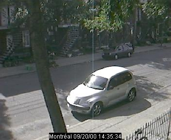
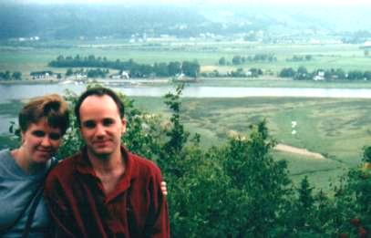
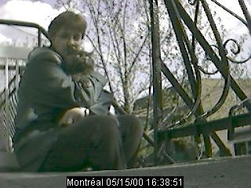
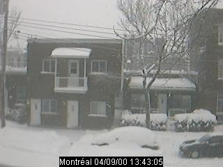
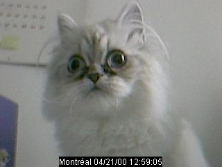
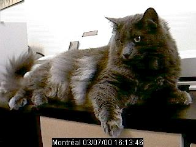
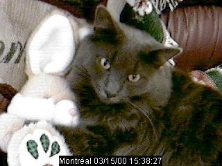

Ok, les visiteurs qui ne me connaissent pas vont dire que je suis *plate* avec mes photos d'autos métissées entre un modèle ancien et les rondeurs modernes de nos bibittes à roues. Je suis loin d'être une fan du culte de l'auto (je suis en fait une parfaite ignorante dans ce domaine et fière de l'être!). :-) Cette photo, c'est juste pour prouver à tous que mon papa, IL EST VENU À MONTRÉAL AVEC SA BELLE PT CRUISER NEUVE QU'IL ADORE TANT, AU RISQUE DE LA BOSSER, QUE DIS-JE? DE LA BLESSER DANS NOS RUES CERTAINEMENT TROP PASSANTES À SON GOÛT. Mais l'amour de l'auto a vaincu tous les obstacles : cette petite PT (certains prononcent piti, d'autres, pété, enfin, c'est selon vos préférences) était tellement confortable qu'il n'a pu s'en passer le temps d'un voyage Berthier-Montréal (un gros 45 minutes dans le meilleur des cas, s'il n'y a pas de construction, s'il n'y a pas de bouchon, si on appuie un peu sur le champignon, etc.). Alors, hein, personne ne me traitera de menteuse! IL EST EFFECTIVEMENT VENU ICI AVEC SA PT, ET EN VOICI LA PREUVE NUMÉRISÉE!
Minuit, un samedi soir, comme en témoigne l'heure et la date sous la photo. Nous avions envie de rigoler un peu : nous voulions savoir à quoi Daniel aurait l'air avec une moustache. Voici. ... ... ... Eh oui, c'est encore plus réaliste avec la webcaméra! :-)
--> Vive le maquillage (eye-liner de Nathalie)!
J'en ai finalement conclu que je préfère l'homme de ma vie sans moustache...

Daniel et moi, et Baie St-Paul en arrière-plan. Les paysages étaient tout simplement impressionnant. Une épave est échouée sur la rivière (juste au centre).
Me voici devant la maison de thé dans le domaine Charlevoix. Nous étions seuls ou presque, parce qu'il pleuvait. *rires* Eh oui, nous n'avons pas été chanceux pour nos premiers jours de vacances, mais nous nous sommes tout de même débrouillés pour passer du bon temps.
Me voici sur le bateau qui nous a permis d'aller voir les baleines (grand rorqual, rorqual commun, bélugas). C'était très bien. En arrière-plan, l'hôtel Tadoussac (non, ce n'est pas là que nous avons dormi. Nous avons séjourné à l'auberge La Grande Maison, et vraiment, je vous la recommande, surtout si vous êtes de nature romantique!). J'espère que vous me pardonnez pour la qualité de l'éclairage. ;-)

Nous avons manqué une belle occasion de prendre une photo de Yahoo mouillé (après son bain). Dommage... Voici, pour vous consoler, une autre photo de notre visiteuse féline du mois de juin Fanny, la petite chatoune himalayenne d'Eric. Notez bien la date sous la photo : elle prouve bien que la photo de juin n'avait pas été *tout à fait* oubliée, malgré les apparences (pour ceux qui ont visité mon site en juin et n'y ont vu qu'une photo de mai... eh oui, désolée pour le retard impardonnable).

Une petite pause-santé avec Yahoo (qui regarde un oiseau faire son nid)...
 
À gauche, la super tempête du 9 avril... Nous croyions que le printemps était arrivé, mais nous nous étions trompés!. À droite... la nouvelle amie de Yahoo, Fanny... c'est la petite chatoune d'Eric Lacourse... Il semble que la caméra l'intéresse beaucoup.
 
À gauche, Yahoo essayait de me faire comprendre, en grimpant sur mon bureau, que je suis donc ennuyante lorsque je passe toute la soirée devant mon moniteur. À droite... on voit que Pâques arrive bientôt, n'est-ce pas? Il a l'air particulièrement doux, sur cette photo (je trouve). Qui devinerait que ce chat a parfois plus que sa part de caractère? À propos, il est passé un autre bon 30 minutes dans cette position, sans bouger, après la prise de cette photo... Il faut croire que ça lui plaisait!